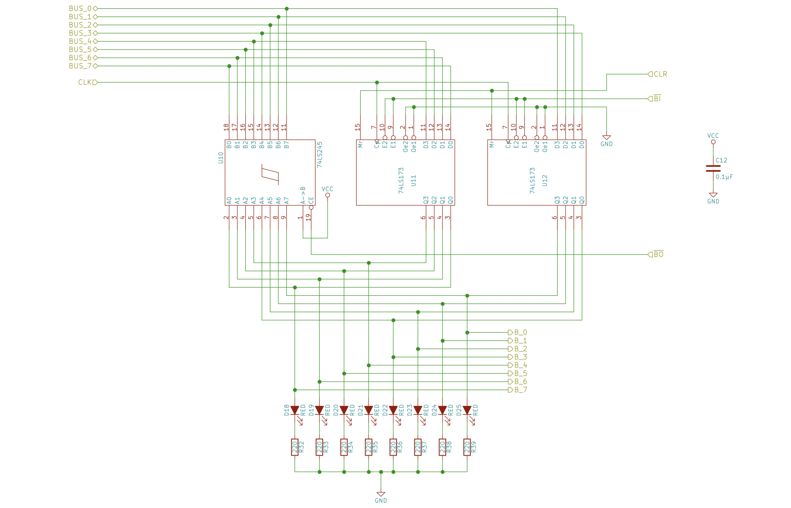

TD-8: 2. hafta raporu
74HC entegrelerle breadboard üzerinde kendi 8-bit bilgisayarımız. Sonunda C ile yazılmış Snake oyunu onda çalışacak.
İlerleme
YazılımDeniz
- Komut seti ve ROM üreticileri bitti
- Assembler bitti
- Emülatörler ve 34 test bitti
- Çarpma, bölme, yazdırma kütüphanesi bitti
- Devre test vektörü üretici Kasım
- Arduino iz ve yükleme yazılımı Aralık
- C derleyicisi Kasım – Mart
- Snake oyunu (C) Mart – Nisan
DonanımAbdurrahman
- M1 saat modülü sürüyor
- M4 registerlar (A, IR) ve ALU sürüyor
- M3 adres, M2 kontrol, M5 bellek Kasım
- İşlemcinin birleştirilmesi Kasım
- M6 VGA Aralık
- M7 PS/2 klavye Aralık
- KiCad şemaları, yerleşim planı Aralık
- Breadboard yapımı ve testleri Ocak – Mayıs
Çubuklar işlerin plandaki sürelerine göre bölündü (SISTEM-PLANI bölüm 13–14). Yüzde yalnızca biten işleri sayar: bir modül, testleri geçince biter.
Yaptık
- Sistem planı ve bütçe17.503 TL, sınır 30.000 TL
- Kendi komut setimiz TD-853 komut, danışman onayladı
- Simülasyon yazılımıassembler, 2 emülatör, 34 test
- Çarpma, bölme kütüphanesi ve 2 demoasal sayılar, Fibonacci
- Saat modülü Proteus'ta kurulduAbdurrahman
- Seçimlerimizin araştırmasıkomut seti, dil, assembler, hazır kitler
Yapıyoruz
- Saat modülü testleriAbdurrahman · ilk kilometre taşı
- Register şemaları ve testleriAbdurrahman
- C derleyicisiDeniz · 10 Kasım'da başlıyor
- Flash çip siparişi16 Kasım'a kadar
Yapacağız
- İşlemcinin bütün modülleri simülasyondaKasım
- VGA ekran ve klavye simülasyondaAralık
- Breadboard'da kurulumOcak – Haziran 2027
- C ile yazılmış Snake demosuMayıs 2027
Kilometre taşları
- 9 Kas · şimdiSaat modülünün testleri geçiyor
- 23 Kasİşlemci simülasyonda emülatörle sıfır farkla çalışıyor
- 14 AraSimülasyonda ekrana yazı
- 3 OcaTasarım donduruldu, yapıma hazır
- Nisan 2027Breadboard'da işlemci program çalıştırıyor
- Mayıs 2027Snake demosu çalışıyor
Deniz
Simülasyon yazılımı, komut seti ve ileride C derleyicisi. Bu hafta: seçimlerimizin araştırması ve TD-8 assembly'sinde ilk kütüphane. Notlar: Taha/hafta2.
Neyi neden seçtik
Neden hazır bir işlemci (6502, Z80) değil?
Hazır işlemciyle bilgisayarın geri kalanını kurarız ama işlemciyi biz tasarlamamış oluruz. Projenin amacı işlemcinin kendisini 74HC entegrelerle kurmak.
Hazır işlemci yolu daha az riskli (6502 için cc65, Z80 için SDCC derleyicisi hazır), bu yüzden yedek plan olarak duruyor. W65C02 hâlâ üretiliyor; Zilog bağımsız Z80'in üretimini 2024'te durdurdu.
Hangi komut seti?
Kendi tasarımımız TD-8: 53 komut, 88 opcode, 8-bit veri, 16-bit adres. A akümülatör, X 16-bit gösterici, 14 dallanma koşulu.
Üç öneri karşılaştırıldı: en az çip (54 entegre), C dostu (96), hata ayıklanabilir (115). Hata ayıklanabilir olan temel alındı, diğerlerinin iyi fikirleri eklendi, 92 entegreye indirildi.
Kontrol ünitesi neden mikrokodlu?
Kablolu kontrolde her hata kablo değişikliği demek. Mikrokodda komut adımları flash çipte duruyor; hatayı düzeltmek için Python'dan yeni imaj üretip çipe yazmak yetiyor. Flag'ler mikrokod adresine girdiği için koşullu dallanma ek devre istemiyor.
ALU neden flash tablosu?
74HC181 ALU entegresinin üretimi bitti; toplayıcı ve kapılarla 25 işlem çok entegre ister. 2 flash çipte hazır sonuç tablosu var. Tablo, 8 milyon girişin hepsinde Python'daki referans ALU ile karşılaştırıldı.
Neden 74HC, 74LS değil?
92 entegrede 74LS ailesi 1–2 A çeker ve ısınır, 74HC çok daha az akım çeker.
Hangi programlama dili?
- Araçlar: Python 3.12. Hızlı geliştirme, ek paket yok, test kolay. Emülatör saniyede 0,36–1,7 milyon çevrim çalıştırıyor, gerçek makine 1 milyon.
- TD-8 programları: şimdilik TD-8 assembly, yapım döneminde C'nin bir alt kümesi.
- C derleyicisi: kendimiz yazıyoruz (
tdcc). GCC/LLVM'i yeni bir 8-bit işlemciye uyarlamak aylar sürer; Small-C ve LCC incelendi.
Hangi assembler?
Kendi yazdığımız asm.py (~400 satır). Plan genel amaçlı customasm'i öneriyordu. Kendimizinkini seçtik çünkü opcode tablosunu doğrudan komut seti dosyasından okuyor: komut seti değişince assembler kendiliğinden güncelleniyor. Emülatör ve testlerle aynı kodun içinde, kurulum gerekmiyor. ca65, vasm gibi hazır assembler'lar var olan işlemciler için, TD-8'i bilmiyorlar.
Piyasadaki hazır kitler
| Kit | Nedir | Avantajı | Neden seçmedik |
|---|---|---|---|
| Ben Eater 8-bit | Breadboard'da SAP-1 tabanlı eğitim bilgisayarı | Video anlatımı, denenmiş tasarım | 4-bit adres, 16 byte RAM: C ve VGA mümkün değil |
| RC2014 | Z80 tabanlı modüler kart seti | BASIC ve CP/M hazır çalışır | İşlemci ve kartlar hazır, tasarım katkısı az |
| Gigatron TTL | Mikroişlemcisiz, ~35 TTL entegreli bilgisayar | Az entegreyle VGA ve oyun | Tasarım ve ROM hazır; 6,25 MHz breadboard'da zor |
| FPGA kartı | İşlemciyi Verilog/VHDL ile tarif etmek | Hızlı, kablolama hatası yok | Proje kararı: gerçek entegrelerle breadboard |
Kitlerden fikir aldık: modül modül kurma ve mikrokodu EEPROM'a yazma Ben Eater'dan, ekran üretme fikirleri Gigatron'dan. Hazır parçayı tasarımın konusu olmayan yerlerde kullanıyoruz: kristal osilatörler (4 MHz, 25 MHz), flash ve SRAM bellek çipleri. Arduino yalnızca test aracı, demo onsuz çalışacak.
Assembly simülasyonu
C derleyicisinin ileride kullanacağı rutinleri şimdiden TD-8 assembly'sinde yazdık (sim/lib/runtime.asm) ve iki demo programla emülatörde çalıştırdık. Ekran çıktıları emülatörün ürettiği gerçek çıktılar.
> py cli.py run examples/asal.asm --ref
1000'DEN KUCUK ASAL SAYILAR
2 3 5 7 11 13 17 19
23 29 31 37 41 43 47 53
59 61 67 71 73 79 83 89
97 101 103 107 109 113 127 131
137 139 149 151 157 163 167 173
179 181 191 193 197 199 211 223
227 229 233 239 241 251 257 263
269 271 277 281 283 293 307 311
313 317 331 337 347 349 353 359
367 373 379 383 389 397 401 409
419 421 431 433 439 443 449 457
461 463 467 479 487 491 499 503
509 521 523 541 547 557 563 569
571 577 587 593 599 601 607 613
617 619 631 641 643 647 653 659
661 673 677 683 691 701 709 719
727 733 739 743 751 757 761 769
773 787 797 809 811 821 823 827
829 839 853 857 859 863 877 881
883 887 907 911 919 929 937 941
947 953 967 971 977 983 991 997
TOPLAM ASAL SAYISI: 168
asal.asm: 1000'den küçük asal sayılar, deneme bölmesiyle. 168 asalın hepsi doğru. 3.748.290 çevrim, gerçek makinede ~3,7 saniye.
> py cli.py run examples/fibonacci.asm
FIBONACCI SAYILARI (16-BIT) F0 = 0 F1 = 1 F2 = 1 F3 = 2 F4 = 3 F5 = 5 F6 = 8 F7 = 13 F8 = 21 F9 = 34 F10 = 55 F11 = 89 F12 = 144 F13 = 233 F14 = 377 F15 = 610 F16 = 987 F17 = 1597 F18 = 2584 F19 = 4181 F20 = 6765 F21 = 10946 F22 = 17711 F23 = 28657 F24 = 46368
fibonacci.asm: 16 bite sığan son terime (F24 = 46368) kadar. 33.170 çevrim = 33 ms.
| Rutin | Ne yapar | Ortalama | En kötü | Plan tahmini |
|---|---|---|---|---|
| __mul16 | 16-bit çarpma | 1.070 | 1.240 | 250–400 |
| __mul16 | çarpan < 256 | 500 | 630 | |
| __divmod16 | 16-bit bölme ve kalan | 1.250–1.380 | 1.590 | 600–900 |
| print_u16 | sayıyı ondalık yazar | 1.200 | 2.050 |
Çevrim sayıları; 1 MHz'de 1 çevrim = 1 µs. 400'er rastgele girişle ölçüldü, CALL ve RET dahil.
Bulgu: çarpma ve bölme plandakinden 2–3 kat yavaş
Bu yüzden C derleyicisi sabitle çarpmayı kaydırmaya çevirecek (Snake'teki satır*64 6 kaydırma ile yapılır) ve döngülerde * / % kullanılmayacak. Snake'in tasarımı zaten bölme gerektirmiyor.
- 34 otomatik test geçiyor (geçen hafta 27). Çarpma ve bölme 400'er girişte Python'un sonucuyla aynı, iki emülatör aynı sonucu ve aynı çevrim sayısını veriyor.
- Testlerin gerçekten hata yakaladığı denendi: çarpmada ADC yerine ADD yazınca 200 girişin 153'ünde hata çıkıyor.
- Bu deneme sırasında bölme rutininde gereksiz bir taşma kontrolü bulundu ve kaldırıldı; bölme 48 çevrim kısaldı.
Gelecek hafta
- C derleyicisine (
tdcc) başlamak. Emülatör ve kütüphane hazır olduğu için Ocak'ı beklemeye gerek yok. İlk hedef: C ile yazılmış "MERHABA" emülatörde. - Flash çip siparişi (en geç 16 Kasım).
Abdurrahman
Devre modüllerini Proteus'ta kuruyor ve test ediyor. Kendi notları: Abdurrahman klasörü.
1. hafta: saat modülü
Saat modülü (M1) Proteus'ta simüle edildi: 4 MHz osilatör, iki flip-flop ile 4 faz, CPU saati 1 MHz.
2. hafta: register şemaları
Üç register için Proteus şeması hazırlandı: A registerı, B registerı ve komut registerı (IR). Her biri aynı yapıda:
- 8 bitlik veriyi tutmak için iki adet 74LS173 (4-bit register).
- Veriyi ortak veri yoluna (BUS_0–BUS_7) vermek için bir 74LS245 sürücü.
- Kontrol hatları: CLK, CLR, yükleme (AI, BI, II) ve veri yoluna çıkış (AO, BO).
- Register içeriğini görmek için 8 LED ve 220 Ω dirençler; besleme için 0,1 µF kondansatör.

Durum: Şemalar çizildi. Yükleme, temizleme ve veri yoluna çıkış testleri henüz yapılmadı.
Sıradaki adım: şemaları TD-8 planına uyarlamak
Şemalar klasik SAP-1 register yapısında. TD-8 planında (SISTEM-PLANI bölüm 5.1) registerlar farklı:
- TD-8'de B registerı yok. ALU'nun ikinci girişi doğrudan veri yolu.
- A registerı bir 74HC377. Girişini veri yolundan değil ALU'nun sonucundan alır, veri yoluna 74HC245 ile çıkar.
- Komut registerı (IR) bir 74HC377. 8 bitin hepsi mikrokod ROM'unun adresine gider, veri yoluna çıkmaz.
- Entegre ailesi 74HC. Yükleme hatları ayrı anahtarlardan değil kontrol ünitesinin kod çözücüsünden gelir.
Gelecek hafta
- Saat modülünün testlerini bitirmek (ilk kilometre taşı).
- Register şemalarını TD-8 planına uyarlayıp yükleme ve veri yolu testlerini yapmak.
- Proteus proje dosyalarını ve test ekran görüntülerini klasöre eklemek.